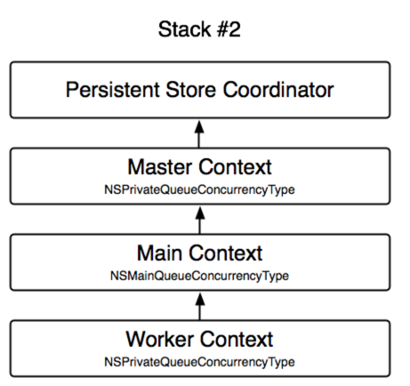
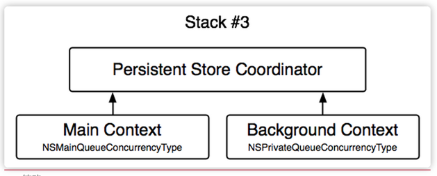
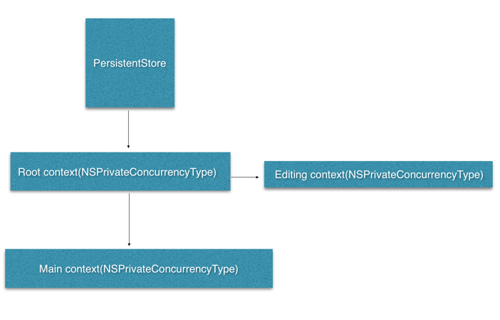
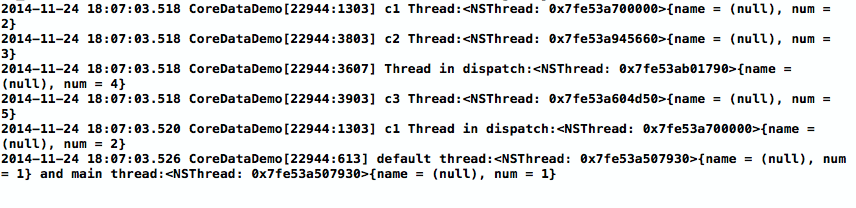

前言
本篇文章对平时项目开发中容易理解错误，以及碰到的坑进行了归纳总结，理解完本篇文章的内容算不上精通，但是已经算是正确入门了吧。
CoreData的特性
概念
官网里对core data的表述是这样的：
The Core Data framework provides generalized and automated solutions
to common tasks associated with object life-cycle and object graph
management, including persistence.
所以呢，core data，是一个关于数据的解决方案，他帮助我们定义并管理一个对象的生命周期和数据之间的关系。数据关系很好理解，他定义的关系和SQL相似，略有区别的地方在于CoreData中的数据关系都是双向的，具体在下边的开始使用章节会提到。
CoreData组件
CoreData有三大组件，理解三个组件的关系对了解CoreData的全貌有非常大的帮助。
NSPersistenStoreCoordinator
官网描述是这么说的：
Instances of NSPersistentStoreCoordinator associate persistent stores
(by type) with a model (or more accurately, a configuration of a
model) and serve to mediate between the persistent store or stores and
the managed object context or contexts. Instances of
NSManagedObjectContext use a coordinator to save object graphs to
persistent storage and to retrieve model information. A context
without a coordinator is not fully functional as it cannot access a
model except through a coordinator. The coordinator is designed to
present a façade to the managed object contexts such that a group of
persistent stores appears as an aggregate store. A managed object
context can then create an object graph based on the union of all the
data stores the coordinator covers.
NSPersistentStoreCoordinator顾名思义，是一个持久化层（如SQL数据库）和内存（NSManagedObjectContext）之间的一个数据解析层。他的职责就是根据NSManagedObjectModel里的配置信息，将数据转化成对应层能够解析的样子。
从他的使用里，也证实了这一点。
|
|
从这个接口也能够发现，CoreData是可以支持SQL以外的存储方式的！
注意addPersistentStoreWithType:的命名，参照章节开始的图，我们发现NSPersistentStoreCoordinator是可以支持多一个持久化类型的，当然多个持久化类型的方式在iOS的开发中并不多见。
目前CoreData所支持的类型
NSManagedObjectModel
官方描述如下：
Models describe object graphs to be managed. Models (and their
entities/properties/fetch request templates) are editable until they
are used by a persistent store coordinator, allowing developers to
create/modify them dynamically. However, once a model is being used,
it MUST NOT be changed. When the persistent store coordinator first
fetches data using a model, it will become uneditable. Any attempt to
mutate a model or any of its subobjects after that point will cause an
exception to be thrown. If you need to modify a model that is in use,
create a copy, modify the copy, and then discard the objects with the
old model.
NSManagedObjectModel顾名思义，是一个对象模板，他描述了对象的数据结构以及数据之间的关系
NSMnagedObjectContext
官方描述：
An instance of NSManagedObjectContext represents a single “object
space” or scratch pad in an application. Its primary responsibility is
to manage a collection of managed objects. These objects form a group
of related model objects that represent an internally consistent view
of one or more persistent stores. A single managed object instance
exists in one and only one context, but multiple copies of an object
can exist in different contexts. Thus object uniquing is scoped to a
particular context.
他是对象的管理者，管理内存中注册在这个context下的所有对象，包括他的生命周期和状态。注册这个地方很有意思，在一个application中，可以存在不止一个context，持久化层里的同一个数据也可以被注册在不同的context中。这么做有什么好处呢，在context的章节会详细表述
开始使用CoreData
关于入门的使用，网上有很多，随便一搜就是一大把，可参考这个
使用MagicalRecord
一般情况下，core data在使用时会出现非常多重复的代码，身为程序猿，都有有一颗偷懒的心，拒绝重复的工作，所以MagicalRecord（业界简称MR）应运而生。
MR提供了非常简便的API，帮助我们创建，保存，检索对象。并且他在初始化时定义了一个基本的context架构，具体会在Context章节中提到。
关于MR的具体操作，他的wiki有着详细的描述。
关于 MR 的一些坑，可以参考CoreData 与 MagicalRecord的故事这篇文章
使用Mogenerator
由于NSManagedObject的生成是一个手动的过程，因此在我们修改DataModel后，之前已经生成的NSManagedObject并不能及时更新，必须要手动重新生成新的类文件。但是问题来了，我们可能在对应的object class里新增了一些通用方法以便我们更容易的操作object，但是重新生成类文件并不会保留我们的修改。因此在更新DataModel的操作变得尤其麻烦。
偷懒的程序员们由此写了一个工具，根据DataModel自动生成NSManagedObject，并且通过继承的方式，将core data自动生成的属性方法和人为添加的属性方法区别开来。这就是Mogenrator
Mogenrator可以根据预设的模板，生成对应的NSManagedObject class，我们可以通过Xcode的runscript脚本，实现在编译期间更新DataModel
|
|
顺便做一个广告，在gitlab的项目集合了一些项目相关的脚本，你又可以再偷懒一点了：）
Context
Context是贯穿在整个应用之间的core data组件，在实际的项目中，只有在初始化的时候才会用到其他两个组件，甚至在使用MR后，我们都不再需要关心除开context外的组件了。
多个context下的数据更新
每个context都是一块独立的内存空间，那么如何把一个context中某个对象的修改通知到另一个context中呢？
在NSManagedObjectContext.h中定义了以下几个notification
保存的通知很好理解，就是调用context的save接口时调用。那么NSManagedObjectContextObjectsDidChangeNotification是在何时调用呢？
他不是在某个对象被修改时调用，而是在调用processPendingChanges时触发的。那么processPendingChanges又是在什么时候调用呢？只有这个context是一个main thread的context时才会自动触发。而属于其他线程的context，则必须要自己调用。
在这篇文章的Track Changes in Other Threads Using Notifications章节有提到。
并且在这个过程中，有一个地方需要注意。假设某个实体对象发生了改变，而这个实体对象在一个main thread context中是Fault状态，那么这个notification也不会触发。因为在Fault状态说明这个实体对象还没有被使用，那么也就没有触发这个通知的必要了。则一点在平时的使用过程中一般不会在意，而在单元测试中，需要模拟一些数据操作并侦听这个通知时，是需要注意的地方。
层级结构
context的层级结构在复杂的项目中尤其重要。他是iOS5之后出来的，称为Nested Context，为了解决多线程下的数据同步问题。
在一个简单的项目里，可能只需要一个context就能够解决所有的问题，但是在涉及到多线程后，一个context会造成主线程的阻塞，并且在高并发的情况下，有可能造成死锁
关于context的架构，先看这篇文章
MR中的层级结构
在MR中，他使用的context结构是：


两个策略的结合体。
首先，在[MagicalRecord setup]中，会创建rootContext和defaultContext，
接着，在其context的便捷构造器中，返回的是defaultContext的childContext
|
|
这个顺序的方式，提供了一个stack2的context架构
最后MR在[MagicalRecord save]方法中，使用的是stack3的方式
|
|
MR中，在setDefaultContext:时会增加一个rootContext的NSManagedObjectContextDidSaveNotification事件侦听，并在在主线程中merge这些修改
|
|
我们在用的层级结构
结合MR，推荐使用的是如下的结构

MR在setup时会创建一个Root context和default context，如上图左边部分。在应用中，我们通过default context进行读的操作，在editing context中进行读写操作。
在需要更新UI的部分，通过侦听NSManagedObjectContextDidChangeNotification以更新UI
但是如此的侦听会有个问题，所有在defaultContext注册的object在change时都会触发这个通知，因此还需要在更新UI之前做一个判断：
抛出通知时，CoreData会将当前context所有变动的对象通过userInfo返回。因此我们可以通过检测这些对象中是否包含我们所需要侦听改变的对象来决定是否需要更新UI。
多线程
CoreData下的多线程，官方有很好的解释
使用Thread Confinement的方式可以避免死锁。但这并不是必须的，所以这是一个编程规范，而不是规则。因此在使用多线程时是需要注意的。
如何保证Thread Confinement？使用context的performBlock方法。
那么这些context的thread是否需要维护呢？
看一个实验.
三个context均在主线程中创建，打印结果如下：

###Context的初始化
Context的初始化有三种类型
|
|
第一种是不支持多线程，context只能在当前线程下使用，现在已经不推荐使用了。后两个是当前常用的方式。在MR中，defaultContext是NSMainQueueConcurrencyType
其他的context是NSPrivateQueueConcurrencyType
在MR下，除非使用defaultContext，其余context中注册的object，在访问时最好使用performBlock调用会context的线程中，避免产生死锁。
死锁
使用MR时，在其他线程调用defaultContext进行保存会产生死锁。因为save时锁了主线程，而save后会触发
NSManagedObjectContextDidChangeNotification，这时MR会调用mergeChangeWithDidSaveNotification:把修改更新到主线程上，这就导致死锁12345[account.managedObjectContext performBlockAndWait:^{[account MR_deleteEntity];[[account managedObjectContext] MR_saveToPersistentStoreAndWait];}];因此保存上述代码风格是个好习惯